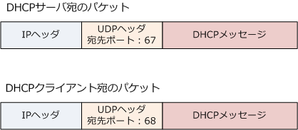
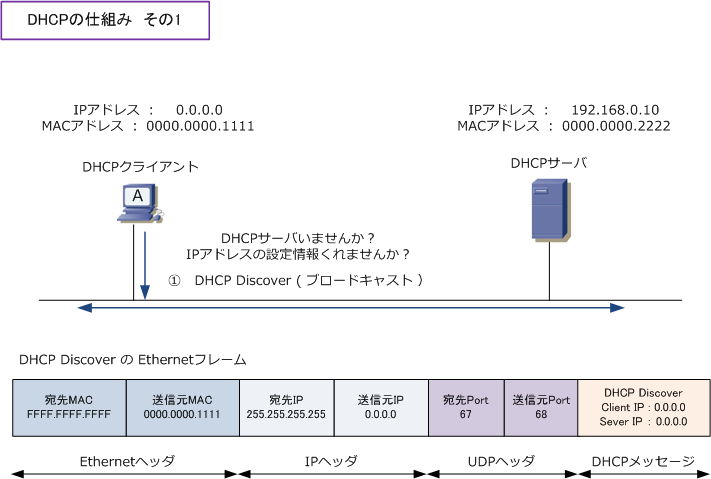
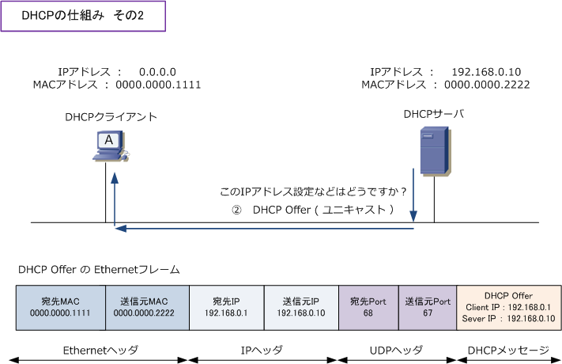
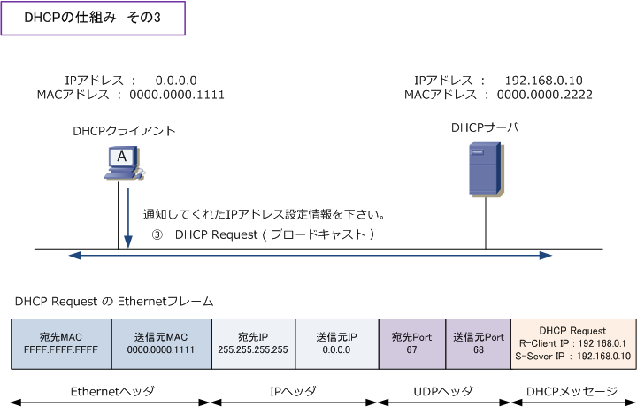
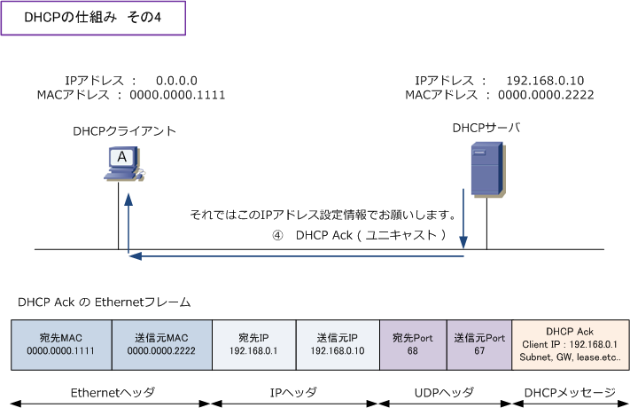

DHCP
DHCPとは
DHCP ( Dynamic Host Configuration Protocol ) は、ネットワーク接続するのに必要なIPアドレスなどの 情報を自動的に割り当てるアプリケーション層プロトコルです。DHCPを使用すれば、IPアドレスに関する 知識がないユーザでも、パソコンをケーブルに接続するだけで簡単にネットワーク接続することができます。
DHCPの構成要素
DHCPの環境はDHCPサーバとDHCPクライアントから構成されます。それぞれの特徴は以下のとおりです。
| 構成要素 | 役割 | 使用される機器 |
|---|---|---|
| DHCPサーバ | IPアドレスの設定情報などを DHCPクライアントに割り当てる |
Windowsサーバ、Linuxサーバ、Ciscoルータなど |
| DHCPクライアント | IPアドレスの設定情報などを DHCPサーバから割り当てられる |
Windows OSなどのパソコン、IP電話など |
DHCPのパケット
DHCPプロトコルはUDP上で動作するプロトコルです。DHCPサーバ宛にパケットを送る場合のポート番号は 「67」を使用し、DHCPクライアント宛にパケットを送る場合はポート番号に「68」を使用します。下図の DHCPメッセージ部分に、例えばDHCPサーバがDHCPクライアントに割り当てるIPアドレス情報があります。

DHCPの仕組み
最初はDHCPクライアントは自身のIPアドレスも知らなければ、DHCPサーバのIPアドレスも知らないので 全ての宛先（ブロードキャスト）にDHCP Discoverメッセージを送信して、ネットワーク全体に問い合わせ。

次に、DHCPサーバはクライアントに割り当てるIPアドレス設定などをアドレスプールから選択して提案。 DHCPサーバの仕様によりDHCP Offerはブロードキャストで送信するので、その場合は宛先MACとIPは ブロードキャストアドレスになります。今回の解説では、ユニキャストを送信することが前提の内容です。

次に、DHCPクライアントは提案されたIPを使用する事を通知するためにDHCP Requestをブロードキャスト。

最後に、DHCPサーバはDHCPクライアントが使用するIPアドレスなどの設定情報をDHCP Ackで送信します。

これで、DHCPクライアントは自身のIPアドレスを「192.168.0.1/24」として稼動できるようになります。
DHCPサーバ
DHCPサーバにはWindowsサーバ、Linuxサーバ、Ciscoルータ等がなることができます。当然、設定方法は 異なりますが設定項目自体は共通です。DHCPサーバには色々な設定項目がありますが、DHCPクライアント にIPアドレスを割り当てる範囲のアドレスプール、サブネットマスク、デフォルトゲートウェイのアドレス、 DNSサーバのIPアドレス、リース期間（ IPアドレスの貸し出し期間 ）などが、基本的な設定項目となります。
← UDPとは DHCPリレーエージェント →